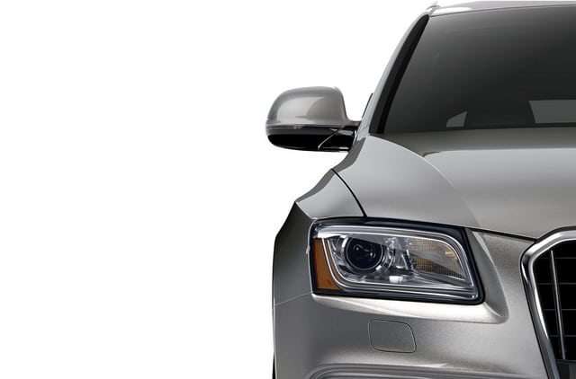

2016 Audi Q5
The all-new 2016 Audi Q5 is a compact luxury crossover SUV that has earned the Top Safety Pick+ rating from the IIHS*.
Stop in today at ACME Dealership in Sometown, USA to test-drive the Q5!
Overview
Looks Sharp, Drives Smooth
The Q5 marries effortlessly-smooth handling with sharp design elements like striking LED daytime running lights and an unmistakable Audi profile.
Conquer the Road
The Q5 is engineered with legendary quattro® all-wheel drive and your choice of three powerful engines. It’s just another way the Q5 lets you conquer the road.

Technology that Sheds Light
The Q5 is an intelligent choice for a number of reasons. Intuitive driver and media systems help you navigate and entertain to make everyday driving a little easier—and a lot more enjoyable.

Available Models and Trims
| Premium | Premium Plus | Prestige |
|---|---|---|
| Starting at $40,900 | Starting at $42,750 | Starting at $53,500 |
| Available Engines | ||
| 2.0 TFSI® | 2.0 TFSI® 3.0 TFSI® |
3.0 TFSI® |
| Available Features | ||
|
|
|